Design & Front-End Development Tools
Survey Results
Who responded?
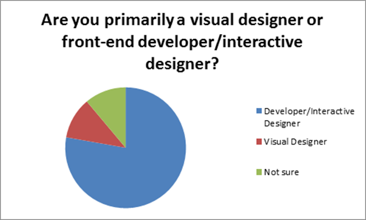
Mac vs. Windows
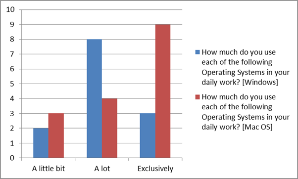
Weighting: Exclusively = 3 points, Used a lot = 2 points, used a little bit = 1 point
Favorite IDE
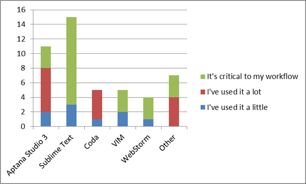Weighting: Critical = 3 points, Used a lot = 2 points, used a little = 1 point
Source Control
Do you use source control built into your IDE for the following source control types?
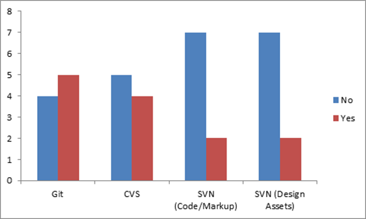Favorite Git clients
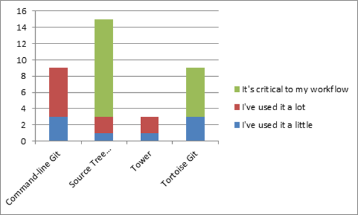
Weighting: Critical = 3 points, Used a lot = 2 points, used a little = 1 point
Favorite SVN clients
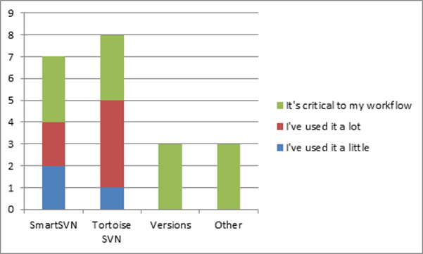
Other SVN clients included: SVN plugin for Eclipse
Weighting: Critical = 3 points, Used a lot = 2 points, used a little = 1 point
Favorite CVS clients
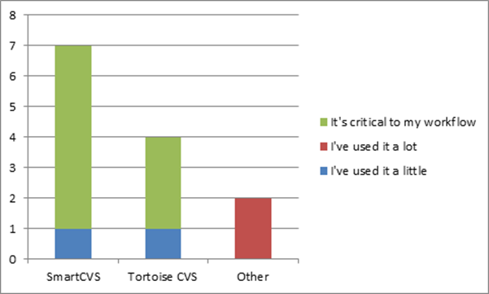
Other CVS clients: Eclipse, Aptana
Weighting: Critical = 3 points, Used a lot = 2 points, used a little = 1 point
FTP
Do you use an FTP client built into your IDE?
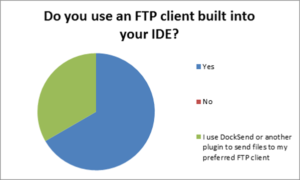Favorite FTP clients
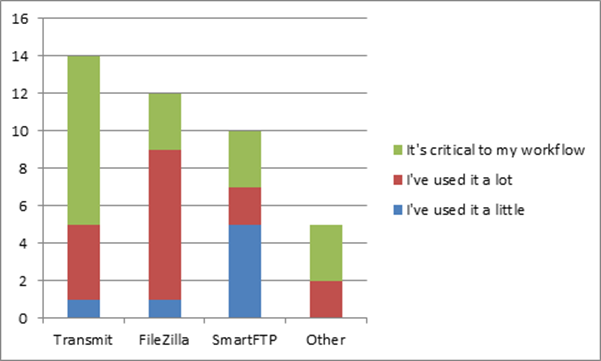
Other clients included: Sublime SFTP, CuteFTP
Weighting: Critical = 3 points, Used a lot = 2 points, used a little = 1 point
Favorite text editors
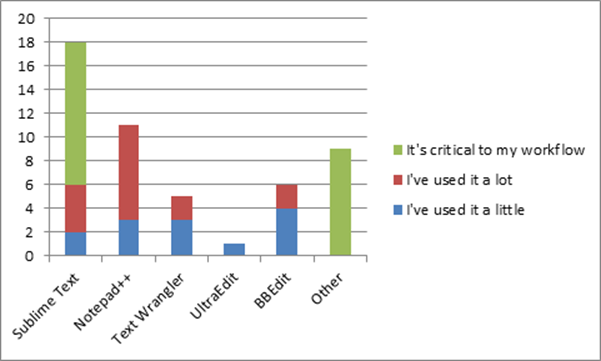
Other clients included: Vim, TextMate, EditPlus
Weighting: Critical = 3 points, Used a lot = 2 points, used a little = 1 point
Favorite IM clients
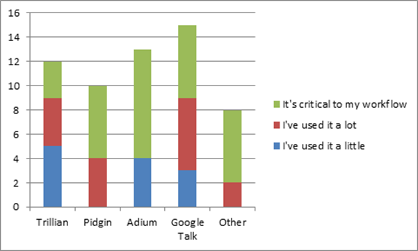
Other clients included: Digsby, Messages
Weighting: Critical = 3 points, Used a lot = 2 points, used a little = 1 point
Favorite compilation utilities
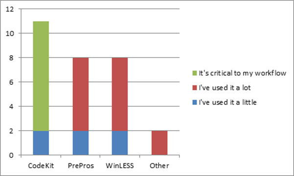
Other clients included: Grunt.js, Gulp.js
Weighting: Critical = 3 points, Used a lot = 2 points, used a little = 1 point
Favorite App launchers
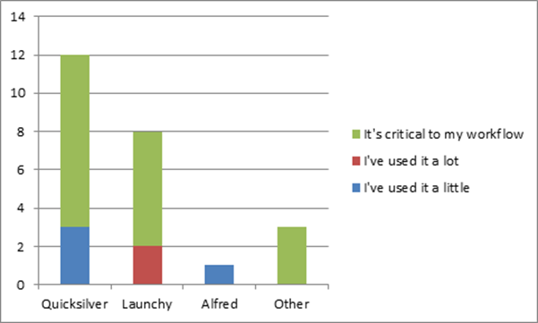
Other clients included: Everything Search
Weighting: Critical = 3 points, Used a lot = 2 points, used a little = 1 point
Archive tools

Favorite archive tools
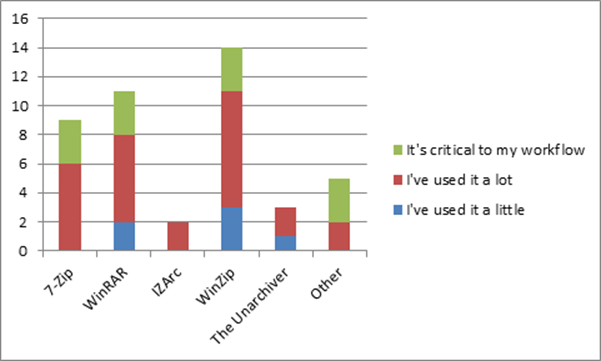
Other clients included: Stuffit Expander
Weighting: Critical = 3 points, Used a lot = 2 points, used a little = 1 point
Favorite image compression tools
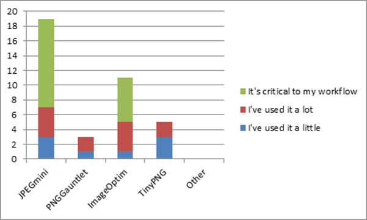
Other clients included: PNGOutWin
Weighting: Critical = 3 points, Used a lot = 2 points, used a little = 1 point
Favorite web server
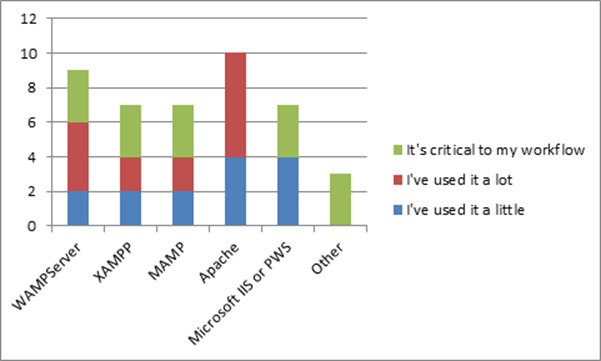
Other clients included: Built-in Mac OS LAMP server
Weighting: Critical = 3 points, Used a lot = 2 points, used a little = 1 point
Favorite file comparison tools
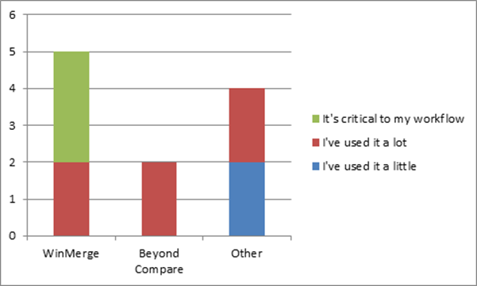
Other clients included: P4 Merge, Vimdiff, Mac File Merge
Weighting: Critical = 3 points, Used a lot = 2 points, used a little = 1 point
Recommended browser plugins
- Adobe Edge Inspect (Chrome) - http://html.adobe.com/edge/inspect/
- Change HTTP request header (Chrome) - https://chrome.google.com/webstore/detail/change-http-request-heade/ppmibgfeefcglejjlpeihfdimbkfbbnm?hl=en
- Firebug - http://getfirebug.com/
- FireShot - http://getfireshot.com/
- Google Chrome to Phone Extension - https://chrome.google.com/webstore/detail/google-chrome-to-phone-ex/oadboiipflhobonjjffjbfekfjcgkhco?hl=en
- Google PageSpeed - https://developers.google.com/speed/pagespeed/
- Hanson Inc plugin (Chrome): https://chrome.google.com/webstore/detail/hanson-inc/nndhfbmohgbgoggdjolidmicnpnadcoh
More recommended plugins
- Screen Capture by Google (Chrome) - https://chrome.google.com/webstore/detail/screen-capture-by-google/cpngackimfmofbokmjmljamhdncknpmg?hl=en
- Screengrab (Firefox) - https://addons.mozilla.org/en-US/firefox/addon/screengrab-fix-version/
- Web Developer (Chrome, Firefox) - http://chrispederick.com/work/web-developer/
- WhatFont - https://chrome.google.com/webstore/detail/whatfont/jabopobgcpjmedljpbcaablpmlmfcogm?hl=en
- Window Resizer (Chrome) - https://chrome.google.com/webstore/detail/window-resizer/kkelicaakdanhinjdeammmilcgefonfh?hl=en
- YSlow - http://developer.yahoo.com/yslow/
Other recommended software
- Console2 - http://sourceforge.net/projects/console/
- Cropper - http://cropper.codeplex.com/
- Divvy - https://mizage.com/divvy/
- Evernote - https://evernote.com/
- Fiddler - http://www.telerik.com/fiddler
- fontexplorer X Pro - http://www.fontexplorerx.com/
- GnuWin - http://gnuwin64.sourceforge.net/
More recommended software
- Screaming Frog – http://www.screamingfrog.co.uk/seo-spider/
- SFTP for Sublime Text 2 - http://wbond.net/sublime_packages/sftp
- Skyfonts - http://www.fonts.com/browse/font-tools/skyfonts
- TotalTerminal - http://totalterminal.binaryage.com/
- WinSCP - http://winscp.net/eng/index.php